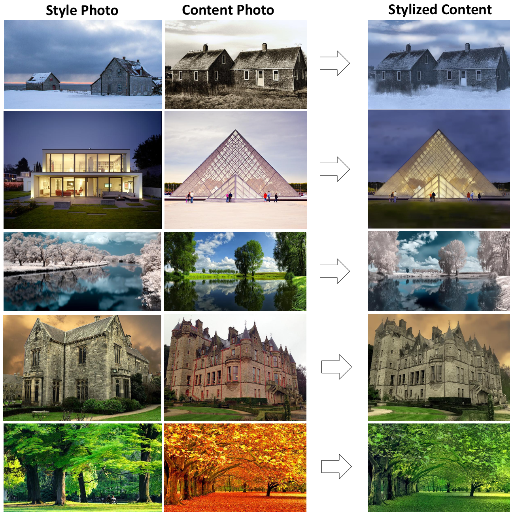

Neural Network를 이용해 두 장의 이미지를 합성하는 기술입니다.
이때 한 장의 이미지는 Content 이미지로 주된 형태를 이루는 이미지이고,
다른 한 장의 이미지는 Style 이미지로 Content 이미지에 변형할 Style을 적용하는 이미지입니다.

기존의 Label을 활용해 변환하는 위치를 조정하던 것에서 더 나아가 Label별로 변환의 정도를 조절할 수 있는게 이 프로젝트의 특징입니다.
여기서 Label이란 이미지에서 원하는 구역을 나눠 이름을 붙인 것입니다.
즉 풍경사진이 있을 때 나무만 변환한다던지, 하늘만 변환하는 등 변환의 여부를 조절할 수 있고,
또한 변환하는 정도까지 조절할 수 있습니다. 변환 정도는 -10배에서 10배까지 조절이 가능합니다.
아래 두가지 예시를 통해 알아보겠습니다.